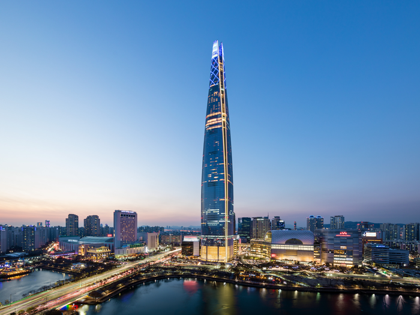
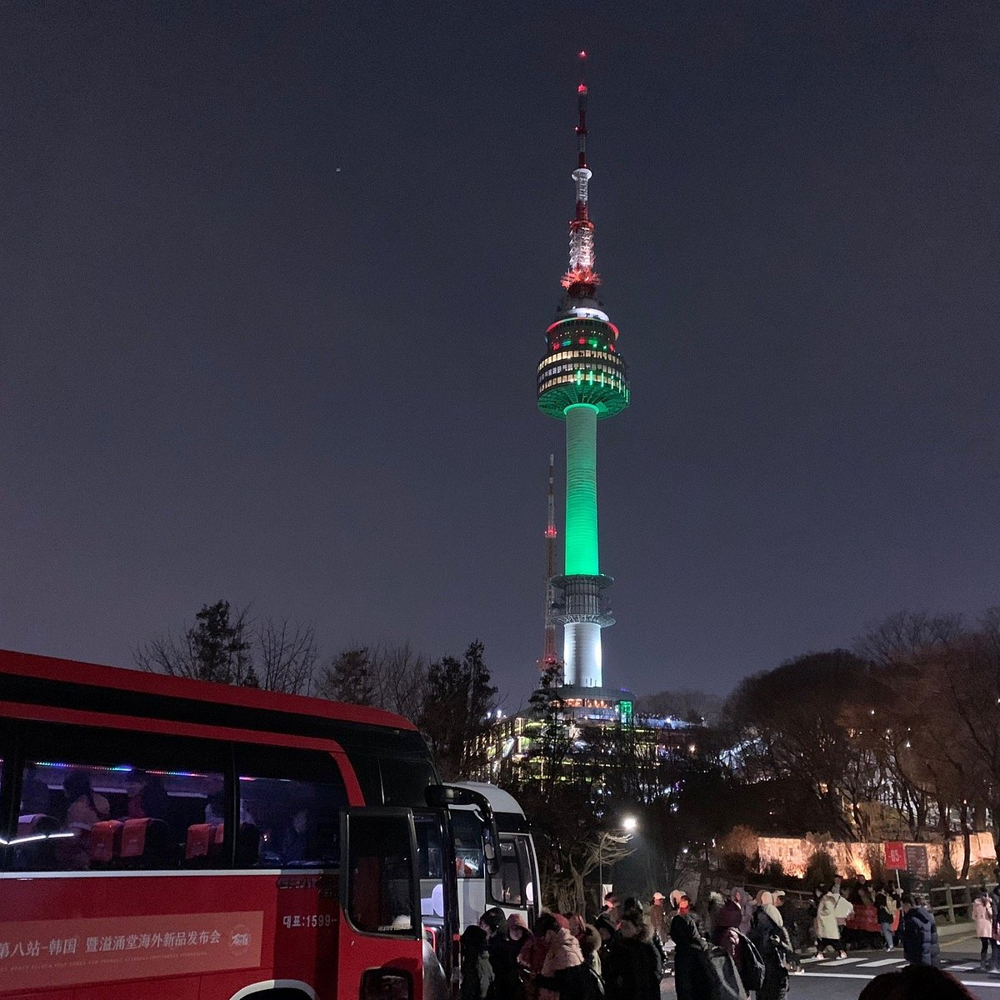
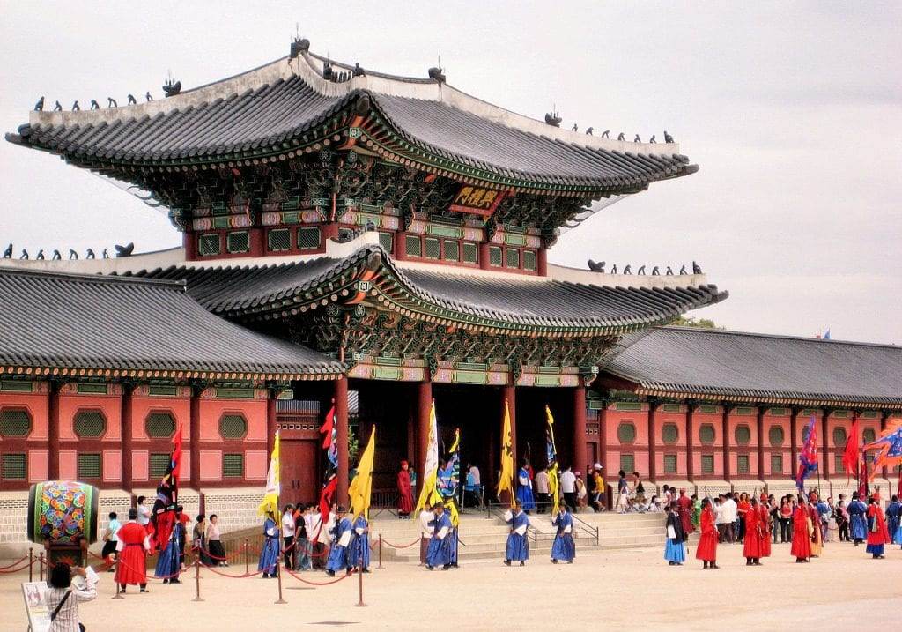
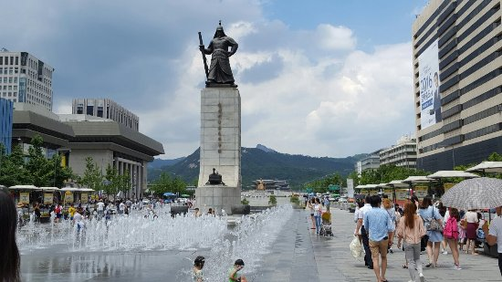
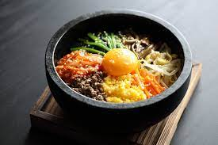

Seoul
Desde modernos rascacielos y luces de neón hasta pagodas, palacios y templos budistas, Seúl es una increíble mezcla de antigüedad y modernidad. Podrás contemplarlo todo desde la N Seoul Tower, construida en lo alto de una cima del Namsan Park. En los salones de té y tiendas de Insadong sentirás la esencia de Corea, que podrás seguir experimentando con una visita a los jardines y museos de Gyeongbokgung. El palacio Changdeokgung, declarado Patrimonio de la Humanidad por la UNESCO, es un ejemplo perfecto de la auténtica arquitectura ancestral.
Monumentos Importantes
Torre de Seoul
La Torre N de Seúl, también conocida como Torre Namsan, es un hito emblemático de Seúl que ofrece vistas panorámicas de la ciudad. Es una torre de observación y comunicación ubicada en la cima de la montaña Namsan en el centro geográfico de la ciudad. N Seoul Tower es un lugar turístico muy popular y una de las principales atracciones imperdibles para cualquier itinerario de viaje. También es un lugar popular entre los lugareños.
-
Palacio Gyeongbokgung
El Palacio Gyeongbokgung es el palacio principal en la capital surcoreana. Se encuentra ubicado en el centro de Seúl y es uno de los lugares que no puedes perderte en tu visita a Corea del Sur. Es una visita un tanto larga porque el espacio es bastante grande y cuenta con algunos museos en su terreno (aunque no forman parte del palacio) pero muy interesante y sirve para poder ver las estructuras más tradicionales.
 -
Plaza Gwanghwamun
Localizada en el antiguo centro administrativo de la época de la dinastía Joseon, en la actualidad la plaza es un epicentro para todos los turistas debido a la gran variedad de lugares por visitar y estatuas y monumentos antiguos que conocer. aquí puedes Tomarte una foto con la estatua del Rey Sejong. Este icónico monumento del inventor del alfabeto coreano, o hangul, siempre ha sido muy representativo de la capital coreana.

| Comidas Corea | |||
| Los platos | fotos y más info | ||
| Lugar | Comida | Info | Otros |
| ciudad de Jinju (Gyeonsang) | Bibimbap | Ver Información |  |
| Seoul | Kimchi | Ver variedades e info | |